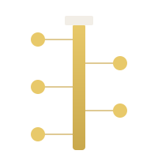
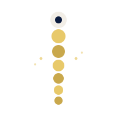
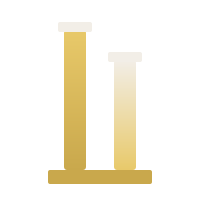

Eric — pick the direction that resonates and I'll refine + drop it into the app (sidebar logo, favicon, app icon, pitch deck). Each mark is shown at app-icon scale, then with the ChiroPillar wordmark beside it as it'll appear in the sidebar. Open-color navy backdrop matches the actual platform.
Stacked blocks growing wider as they rise — visualizes the roll-up compounding. Each block = one clinic acquired. Top capstone = the platform at scale. Architectural, premium, says "we build it up."
Central column with 5 satellite nodes connected by lines — platform feel. Says "one hub, many clinics connected." Tech-y, reads as SaaS/M&A platform. Linear/Notion energy.

A spinal column rendered as a vertebra stack with tiny data dots radiating from one node. Direct chiropractic reference + technology overlay. Most "on-brand" for the niche.

Two parallel columns of different heights on a shared plinth — pure architectural minimalism. Most abstract of the four. Vercel/Stripe wordmark energy. Cleanest at favicon size.
